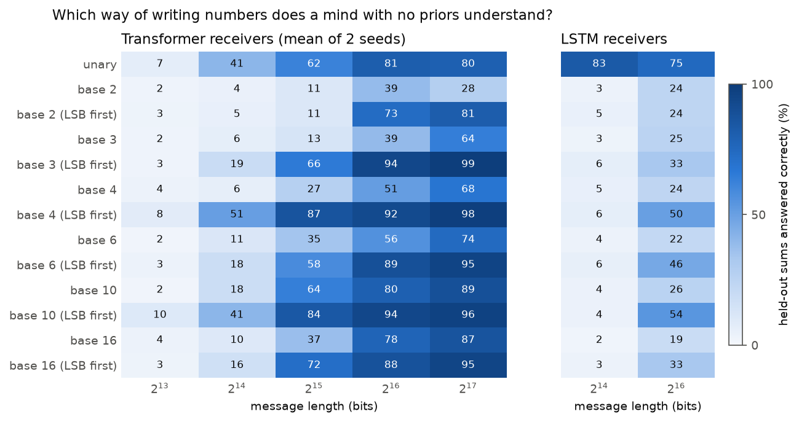
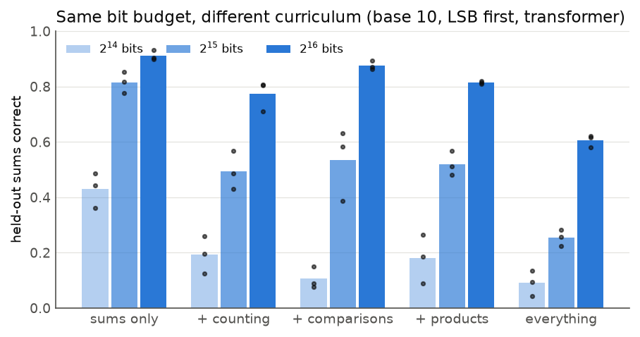
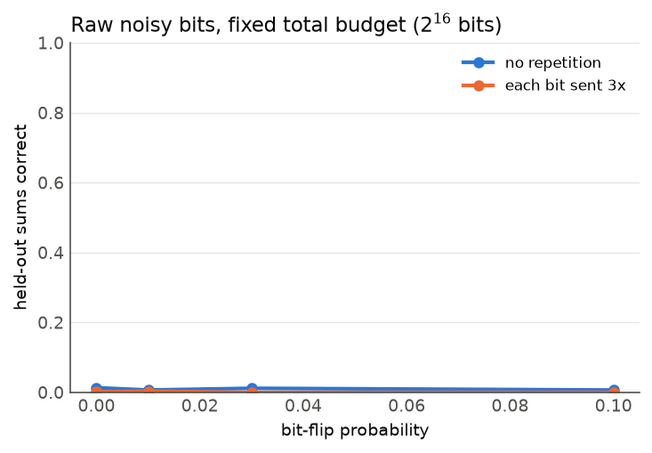
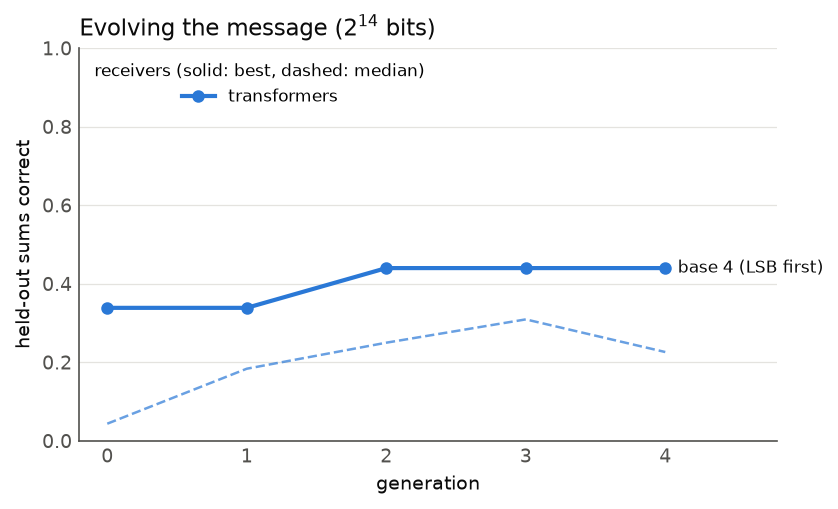
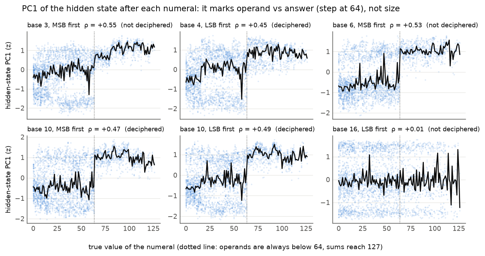

Randomly initialised neural networks stand in for the receiver of a first-contact message. They learn arithmetic from the transmission alone, are examined on sums the message never contained, and are then taken apart to read the message back.
In 1974 the Arecibo radio telescope sent 1,679 bits towards the globular cluster M13. The message opens with the numbers one to ten written in binary, on the assumption that counting is the first thing any technological species would recognise [1]. Later designs went further: Freudenthal's Lincos builds a whole language up from arithmetic statements [2], and the Cosmic Call transmissions of 1999 and 2003 begin with pages of numerals, sums and equalities [3]. Every such message rests on guesses about the receiver: that it will find the symbols, spot the base and digit order, and work out what the operator signs mean. None of these guesses has been tested, because there has never been a receiver to test them on.
This report uses the nearest thing available: a mind that starts with no knowledge at all. A small neural network, randomly initialised, is trained on one transmission and nothing else, purely to predict the next symbol. It is never told what the symbols are, where statements begin, or that the message is about numbers. Then it is examined on sums that the message never contained: a quarter of all operand pairs below 64 are withheld from every design, in both orders. A receiver can answer them only by having extracted the rule of addition from the examples it heard. That turns message design into an experiment: hold the bit budget and the mathematics fixed, change how the message is written, and count how many receivers understand it.
Neural networks are not aliens, and §9 discusses what this proxy can and cannot say. They are, though, the only general learners we can build that have no prior notion of number, and they are a useful adversary: a design that only works if the receiver already thinks like us will fail on them. We ask five questions:
Everything runs on one 8 GB laptop GPU in about ten hours. No data is downloaded: the messages are generated. One trained receiver runs in the browser on the demo page, and visitors can ask it sums it has never heard.
A design fixes a radix b ∈ {1, 2, 3, 4, 6, 10, 16} (where 1 means unary tallies), a digit order (most-significant first, as humans write, or least-significant first), and a mix of statement kinds. The vocabulary is the b digits plus eight operator symbols: plus, times, equals, a comparison sign, less, greater, a list separator and a statement terminator. There are four kinds of statement:
a + b = c ; with a, b < 64, drawn only from the 75% of unordered pairs that are not held out;a × b = c ; with a, b < 16;a ? b = R ; where R is one of the less, greater or equals symbols;n , n+1 , … , n+5 ; with n < 122.Statements are sampled independently from the mix until the bit budget is used up. A symbol costs log2|V| bits, so a
budget buys fewer symbols when the alphabet is larger, and every design pays the same total. Unary writes n as n copies of one
digit and zero as nothing at all, so 0 + 3 = 3 becomes + 111 = 111. A stretch of a base-10, LSB-first message with every
statement kind looks like this (shown in human symbols, digits least-significant first, so "13 + 63 = 76" means 31 + 36 = 67; the receiver sees only opaque token ids):
The main receiver is a 2-layer, 4-head transformer with width 128 (pre-LayerNorm, GELU MLP, learned positions; 0.42M parameters) with a 128-symbol context, or 256 for unary, whose numerals are long. The second is a 2-layer LSTM with 256 units. The design search also uses a narrower transformer (width 64), a 4-layer transformer and a 1-layer, 128-unit LSTM. Every receiver is trained from scratch on random windows of its one message for 8,000 steps (batch 64, AdamW, learning rate 10−3 with warm-up and cosine decay, weight decay 0.1), long enough to see each symbol of the largest messages about 30 times. Long training matters. Like the small algorithmic tasks where "grokking" was first seen [4], a base-2 receiver can sit at chance on held-out sums for thousands of steps and then generalise: one pilot went from 3% at 2,000 steps to 93% at 8,000. To make the sweeps affordable, up to ten transformers with different messages and seeds are trained at once as one batched model with stacked weights and per-member gradient clipping. This is mathematically the same as training them separately, and it gave 1.3–2× more throughput on this GPU.
To ask a question, we show the receiver a real stretch of its message ending at a statement terminator, then the question in its own
symbols, for example a + b =, and let it continue greedily. The answer is correct only if every digit is right and the next symbol is not
a digit. The main metric, held-out accuracy, uses up to 400 of the 504 held-out unordered pairs, each in a random order. A receiver
that has memorised the message scores zero. We also report accuracy on pairs the message did contain, on all 256 products below 16 × 16,
and on comparisons. Chance is far below 1% for sums. Nothing about the exam is shown to the receiver during training.

Figure 1 and Table 1 show the main sweep: 13 numeral systems × 5 message lengths × 2 seeds for transformers (130 receivers), and 2 lengths × 1 seed for LSTMs (26 receivers). Every message contains only sums. Three results stand out.
Least-significant digit first wins in every base. At 215 bits a base-4 message written LSB first gets 87% of
held-out sums right and the MSB-first version 27%. The same gap is 66% against 13% for base 3, 72% against 37% for base 16, and 84% against 64% for
base 10. In bits needed to reach 50% held-out accuracy (Table 1), MSB-first costs 1.4× (base 10) to 4× (base 4) more. Over all 60 transformer cells where both orders were trained with the same base, length and seed, LSB first is ahead in 47 of the
49 that are not tied at the floor (two-sided sign test p = 4×10−12). The mean gain is 21 points (bootstrap 95% interval 16–27).
The LSTM cells agree: 7 of 7 untied pairs, mean gain 9 points (experiments/stats.py). The reason is plausibly the
receiver's own constraint, not the arithmetic: it writes the answer one symbol at a time, left to right. Written LSB first, each digit of
the sum depends only on digits already seen and one carry. Written MSB first, the first digit of the answer depends on a carry chain that has not been
"computed" yet. This matches what is known for transformers trained on addition [8, 9], but here no one told the receiver what the task was.
A human sender would write numbers the way humans do. For this kind of receiver that choice roughly doubles or triples the cost of being understood.
Binary, the Arecibo choice, is the worst positional system. MSB-first binary never reaches 50% within 217 bits (39% and 28% at the two longest lengths, with a large seed spread). LSB-first binary needs about 50k bits, three times as many as LSB-first base 4. Binary numerals are long, so each sum has more digits and more carries, and the context holds fewer examples. Small bases are not bad in themselves, though: base 4 is the best system overall, ahead of base 10 (16k against 19k bits). The optimum is in the middle: few enough symbols that each digit's role is learned quickly, and short enough numerals that carries are rare.
The best numeral depends on the mind. Unary tallies are mid-table for transformers, with a 22k-bit threshold and a plateau near 80%. For LSTMs they are in a class of their own. With 214 bits, an LSTM given unary sums answers 83% of held-out questions, while every positional system is at 7% or below. That message holds just 41 sums, covering about 3% of the allowed pairs. Unary addition is concatenation, and a recurrent network can do it with one counter that goes up during the operands and down during the answer. The same counter solves no positional system. At 216 bits the LSTM's positional results are still at most 54% (base 10, LSB first, again ahead of MSB at 26%). A sender who designed for transformers would pick base 4, LSB first. One who designed for LSTMs would pick tally marks, the oldest numerals humans have. Neither design is best for both, and §7 returns to this.
| numerals | bits to 50% | 215 bits | 217 bits | numerals | bits to 50% | 215 bits | 217 bits |
|---|---|---|---|---|---|---|---|
| base 4, LSB first | 16k | 87% | 98% | base 10 | 27k | 64% | 89% |
| base 10, LSB first | 19k | 84% | 96% | base 16 | 41k | 37% | 87% |
| unary | 22k | 62% | 80% | base 6 | 54k | 35% | 74% |
| base 16, LSB first | 25k | 72% | 95% | base 4 | 64k | 27% | 68% |
| base 3, LSB first | 26k | 66% | 99% | base 3 | 89k | 13% | 64% |
| base 6, LSB first | 28k | 58% | 95% | base 2 | >131k | 11% | 28% |
| base 2, LSB first | 50k | 11% | 81% |
Accuracy on sums that were in the message is close to held-out accuracy once a receiver understands (98% against 96% for base 10 LSB at 217 bits), so these receivers are computing, not remembering. Below the threshold both are low: with too few bits the receiver has not even memorised the examples it heard.
Every real message design spends bits on more than one idea. The Arecibo message counts from one to ten before anything else, and Lincos introduces comparisons and products alongside sums. Here the numeral system is fixed (base 10, LSB first) and part of the budget goes to counting runs, comparisons or products (30% of statements each, or all three together). Then we ask whether addition gets easier or harder to learn. There are three lengths and three seeds, with 45 transformers and 5 LSTMs.

At an equal budget, sums alone are always best (Figure 2). The question is whether the other content does anything beyond taking bits away from sums. To find out, we predict each receiver's accuracy from the number of sums its message contains alone, by interpolating the sums-only curve, and compare. Table 2 shows the gaps.
| extra content | 214 bits | 215 bits | 216 bits | skill learned at 216 |
|---|---|---|---|---|
| counting | +0.00 | +0.04 | −0.08 | (counting not examined) |
| comparisons | −0.18 | −0.10 | −0.02 | 89% comparisons |
| products | −0.11 | −0.11 | −0.08 | 83% products |
| all three | +0.06 | −0.02 | −0.01 | 62% products, 84% comparisons |
No content helps. Counting, the traditional opening of interstellar messages, gives no head start on addition: a receiver learns sums
as if the counting runs were not there. Counting is also expensive. Six consecutive numerals take far more bits than a sum, so 30% of statements is
about half the budget. Products hurt a little at every length, by 8–11 points. They share the sum's form, a ○ b = c, and differ only in
the operator symbol, so early on the receiver confuses the two. Comparisons cost something only while the receiver is still learning. The receivers do
learn the other operations: 89% of comparisons and 83% of products below 16 × 16 at 216 bits. Bits spent on a concept teach that concept,
but they do not transfer to its neighbours. A sender with a fixed budget should put the most important idea in alone first. Each extra idea costs what its
bits cost, and a lookalike idea costs a little more. LSTMs are worse across the board at 215 bits (18% with sums only), and every addition lowers them further.
So far the receiver has been handed clean symbols. A radio receiver gets a stream of bits instead, with no marks between symbols and some bits flipped. Here every symbol of a base-10, LSB-first, sums-only design gets a random 5-bit codeword. The receiver sees only the concatenated bits and is never told the width. Each bit is flipped with probability 0, 1, 3 or 10%. The sender may also send every bit three times, which cuts the number of sums to a third, since repeats count against the same 216-bit budget. Receivers are the same transformers with a 512-bit context, which covers about 11 statements. Questions are asked in clean bits, and answers are decoded with the sender's codebook.

No receiver learned to add from raw bits, not even with no noise and no repetition (Figure 3). They answer 0–2% of held-out sums and about 1% of sums that were in the message. The same content as symbols gives 91%. The receivers did learn something: training loss fell to 0.35 nats per bit, about 1.75 nats per symbol, which captures the framing and the frequent patterns. But it is well above what the sums-only symbol receivers reach, so the arithmetic was never found. With every condition at the floor, the comparison between noise levels and repetition coding cannot be made. A follow-up with four times the training (32,000 steps, clean channel) is queued and will be added to the repository.
For message design this is the sharpest result in the report. The receivers that learn arithmetic from 214 symbol-level bits learn nothing from 216 raw bits. Finding the symbols is harder than the mathematics. The Arecibo message handles framing by its length, 1,679 = 23 × 73, a product of two primes, which suggests a rectangle. Our results suggest that framing deserves more of the budget than any other design choice.
The previous sections take the sender's view. This one takes the view of someone who intercepts a message, or of a sender who wants to check that a design could be read back. The question: can we recover the design from a receiver that has understood it, without ever being told the key? For each of six designs (bases 3, 4, 6, 10, 16 with different digit orders) and two seeds, we generate a 217-bit message containing every statement kind (50% sums, 20% counting, 15% comparisons, 15% products) and shuffle the symbol labels at random. A transformer is trained on the shuffled message. The analyst then sees only the shuffled message and the receiver, and proceeds in four steps:
a op b eq c are true under +, and under ×. The comparison operator is the remaining symbol whose single-symbol results depend only on the sign
of a − b, consistently in more than 95% of cases.| design | seed | digits | separator | counting | order | + and × | < = > | held-out sums |
|---|---|---|---|---|---|---|---|---|
| base 3, MSB first | 0 | 3/3 | ✓ | ✗ | ✓ | ✗ | ✗ | 27% |
| base 3, MSB first | 1 | 3/3 | ✓ | ✗ | ✓ | ✗ | ✗ | 30% |
| base 4, LSB first | 0 | 4/4 | ✓ | ✓ | ✓ | ✓ | ✓ | 89% |
| base 4, LSB first | 1 | 4/4 | ✓ | ✓ | ✓ | ✓ | ✓ | 94% |
| base 6, MSB first | 0 | 6/6 | ✓ | ✗ | ✓ | ✗ | ✗ | 44% |
| base 6, MSB first | 1 | 6/6 | ✓ | ✓ | ✓ | ✓ | ✓ | 56% |
| base 10, LSB first | 0 | 10/10 | ✓ | ✓ | ✓ | ✓ | ✓ | 85% |
| base 10, LSB first | 1 | 10/10 | ✓ | ✗ | ✗ | ✗ | ✗ | 83% |
| base 10, MSB first | 0 | 10/10 | ✓ | ✓ | ✓ | ✓ | ✓ | 77% |
| base 10, MSB first | 1 | 10/10 | ✓ | ✗ | ✓ | ✗ | ✗ | 68% |
| base 16, LSB first | 0 | 7/16 | ✓ | ✗ | ✗ | ✗ | ✗ | 81% |
| base 16, LSB first | 1 | 7/16 | ✓ | ✗ | ✗ | ✗ | ✗ | 81% |
With the shuffled labels, five of the twelve messages were recovered completely: base, digit values, digit order, the plus and times signs, the comparison sign and its three outcomes. In those five, the recovered addition operator makes 100% of the decoded sum statements true. That is a check an interceptor can run without the key. The probe never misidentifies a separator, and it finds the digits exactly in every base up to 10.
Failures come from two places. Receivers that have not understood cannot be read: the two base-3 MSB receivers get only 27–30% of held-out sums, and the counting probe gets no consistent chain of answers from them. The same happens for the weaker of the base-6 MSB receivers (44%) and one base-10 MSB receiver (68%). Every receiver that was read completely scores at least 57% on held-out sums. The probe itself is the other source. In base 16 with numbers below 128, only the digits 0–7 ever begin a two-digit numeral, and the role step found exactly those seven, missing the other nine, although these receivers answer 81% of held-out sums. A base-10 LSB receiver with 83% held-out accuracy gave one wrong successor too many. Better probes would read more of these minds. Understanding is necessary for decipherment but, with this probe, not sufficient. For a sender, the corollary is welcome: a design that receivers learn well, such as base 4 or base 10 written LSB first, can also be read back reliably.
Finally we let the message design itself. A genome is a base (2–16), a digit order and weights for the four statement kinds. A population of 8 designs is scored by the mean held-out sum accuracy of two transformer receivers at 214 bits. The best 3 survive each generation, and 5 mutants replace the rest. The starting population contains two human designs, decimal sums as humans write them and Arecibo-style binary with counting, plus six random ones.

The search rediscovered the main result on its own. After four generations every one of the top six designs is base 4, written least-significant digit first. The best scores 44%, against 18% for the human decimal design and 5% for Arecibo-style binary. The champion keeps some counting (23% of statements). But it does not beat the simple sums-only base-4 LSB message from §3, which scored 51% at the same budget, so with two receivers per evaluation the extra counting is within noise rather than a discovery. Designs that add products, or that write numbers MSB first, are eliminated early.
Status: the same search run against LSTM receivers, and the transfer test that sends each champion to five kinds of fresh receivers (small, standard and deep transformers; small and standard LSTMs), were still running when this version of the report was written. They will be added to the repository and the demo page. §3 predicts the outcome: an LSTM-tuned search should drift towards unary, which the receivers in this search could not choose.

Neural networks are not aliens. Two architecture families trained by gradient descent are a narrow sample of possible minds, and §3 already shows that the best design changes between them. The conclusions are best read as "this design is robust (or fragile) across the minds we could test", not as predictions about any real receiver. A design that fails here relies on priors that a learner without them cannot recover from this many bits. That is worth knowing, whoever the receiver is.
Arithmetic only. Real messages also carry pictures (the Arecibo raster), physics and chemistry. Numbers come first in every proposal, and they are the easiest to examine with held-out questions, so we start there. The number range is small (sums below 128, products below 256).
Budgets. Even the best design needs about 16,000 bits to reach 50% on held-out sums, and nothing learned anything at 8,192. The 1,679 bits of the Arecibo message would teach these receivers nothing about arithmetic. A patient receiver that re-reads a short message forever might do better than our fixed 8,000 training steps suggest. We did not test that, and it would change the trade-offs between length and repetition.
Small searches. The design search (§7) cannot choose unary and uses populations of 8 over 4 generations, two receivers per evaluation and the smallest budget. It can find a good region but not the best design.
Message design. The Arecibo message [1], Lincos [2], the Cosmic Call messages [3] and many other proposals [5, 6] all teach numbers first, and argue for a particular base and layout. Their arguments are about what a receiver ought to find obvious. Minsky argued that any intelligence would converge on arithmetic [7]. As far as we know this is the first work to test candidate designs empirically, against learners that start with no priors, using held-out generalisation as the measure of understanding.
Arithmetic in transformers. Writing the answer least-significant digit first is known to help transformers that are trained to do addition [8, 9], as are position schemes that line digits up [10]. Those works train on question-answer pairs with a known format. Here the receiver gets a single unlabelled stream, chosen by a sender under a bit budget, and must discover the format, the base and the operation itself. Grokking [4] and its mechanistic explanation [11] describe the delayed generalisation we also see.
Decipherment and emergent communication. Statistical decipherment recovers lost scripts and substitution ciphers from text [12, 13]. Work on emergent communication studies codes that neural agents invent [14]. In this work one side's code is fixed, and the other side is a learner whose internals we then probe to recover it.
Treating message design as an experiment, with untrained minds as receivers and held-out questions as the test of understanding, gives clear and sometimes surprising answers. Write the least-significant digit first: it wins in every base, by up to a factor of four in bits. Use a small but not tiny base: base 4 beats both decimal and the binary of the Arecibo message, which these receivers can barely learn. Do not expect one design to suit every mind: tally marks are mediocre for transformers and by far the best for LSTMs. Spend bits on the idea you want understood, because counting and other neighbouring ideas do not transfer. Most of all, solve framing first: with symbol boundaries removed, the same receivers learned nothing from four times the bits. The receivers can also be turned around. A network that has understood a message can be questioned until it gives the message's key back, and this worked completely for five of twelve shuffled designs. The trained receiver on the demo page answers sums that were never transmitted to it. That is, in a small way, what a first contact message is supposed to achieve.